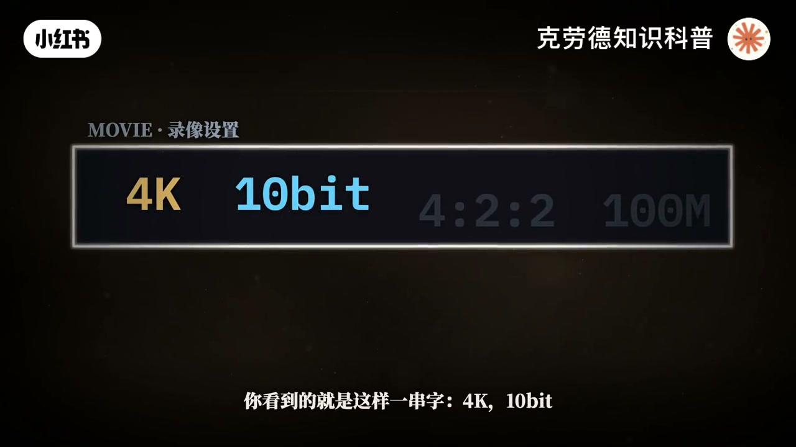
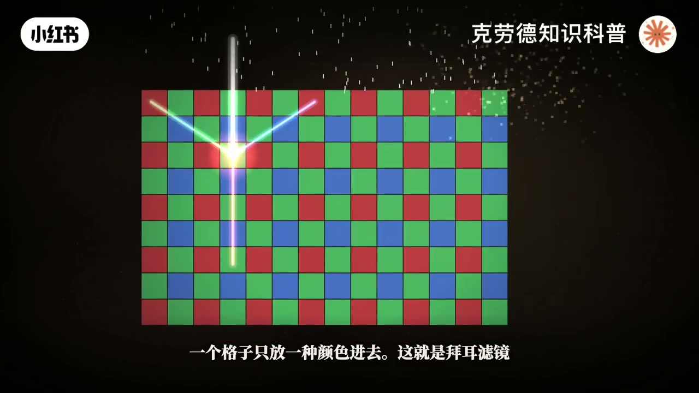
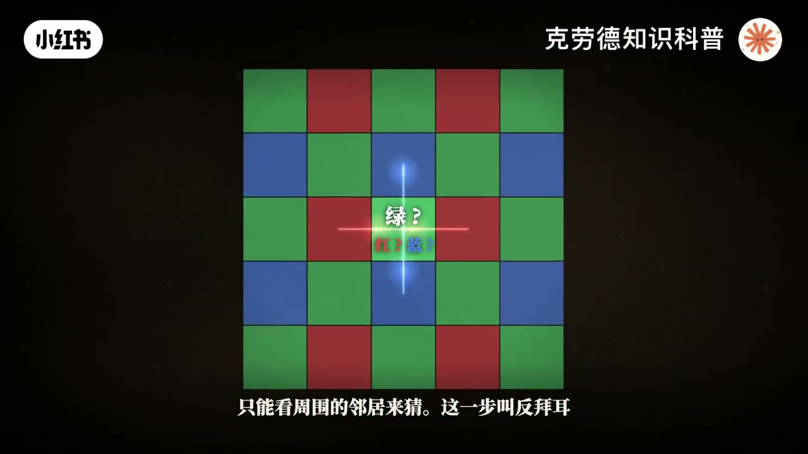
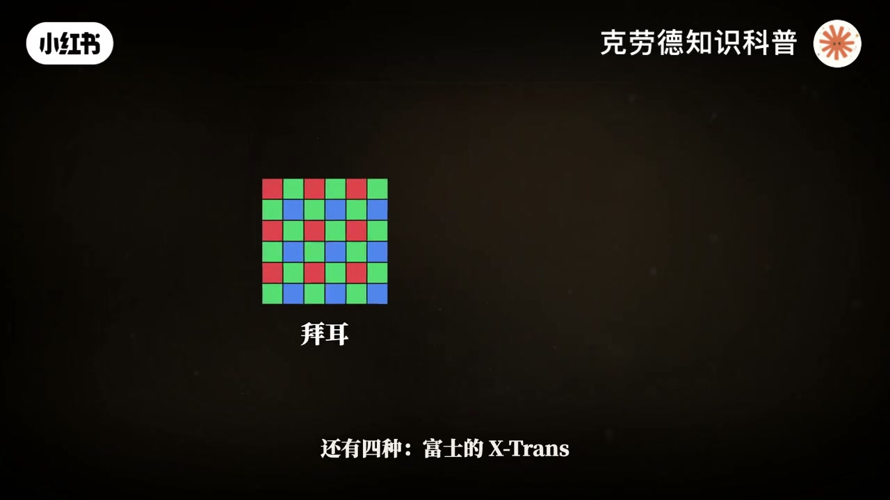
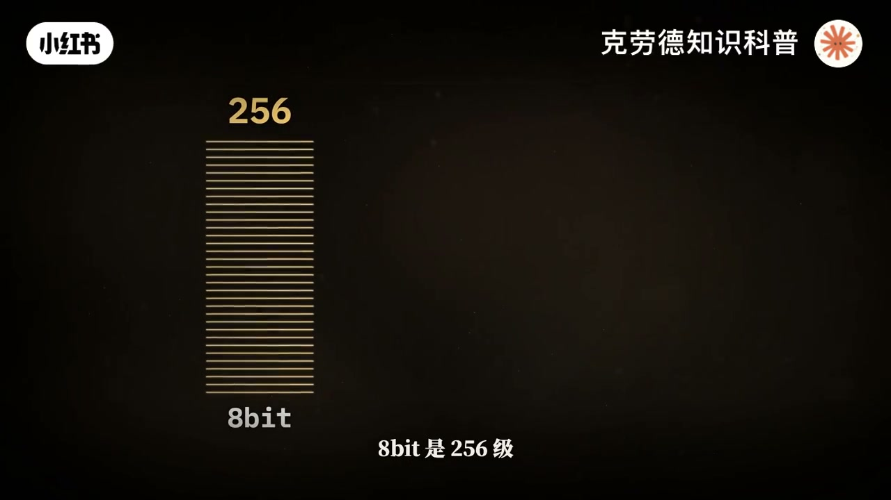
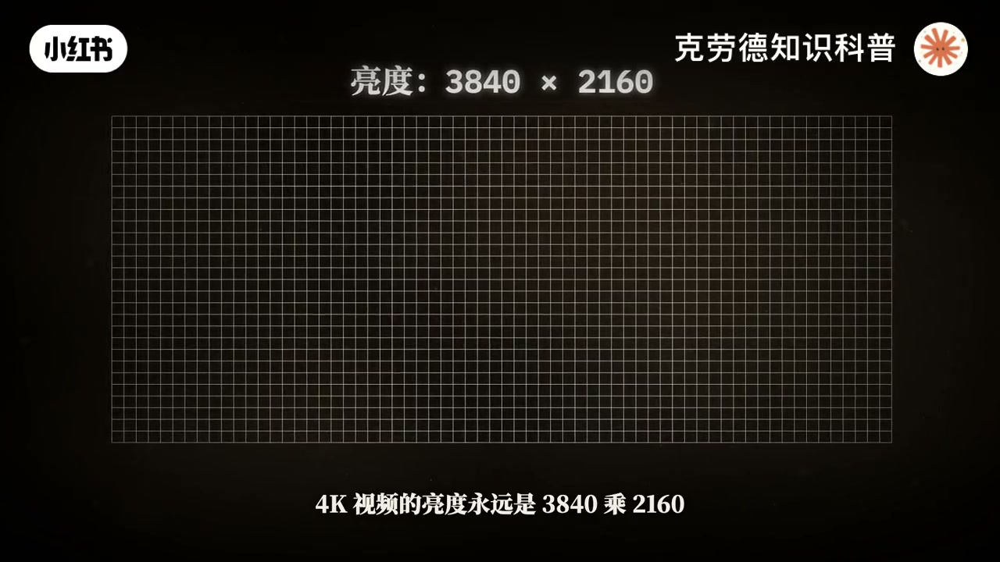
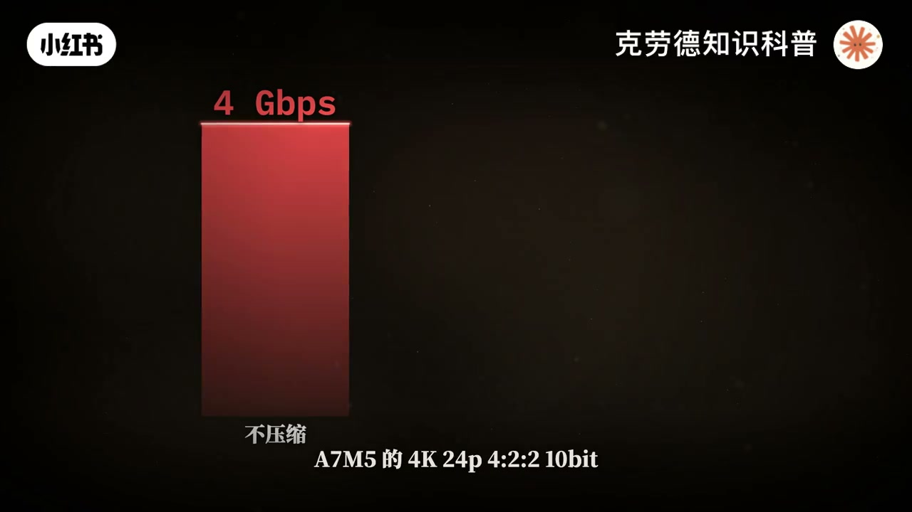
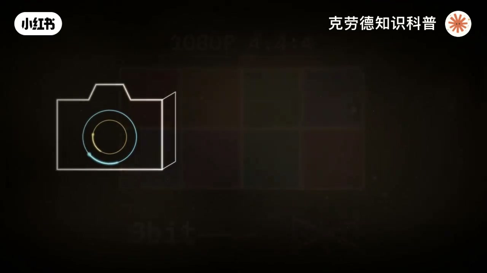

内容要点
从一粒光子到一个视频文件：拜耳滤镜为何只测 1/3 颜色、8bit/10bit 的位深差别、4:2:2/4:2:0 色度抽样怎么省数据，以及拍 Log、抠像、直出各该选什么。
知识结构
传感器天生色盲，拜耳滤镜让每个格子只放一种颜色，其余 2/3 颜色靠邻居猜出来（反拜耳）。
位深决定「楼梯分多少级」，动态范围决定「楼有多高」，两回事。拍 Log 必须 10bit，否则断层。
人眼看细节靠明暗不靠颜色，所以色度可以少存。4:2:0 颜色只有 1080p，但人眼几乎看不出。
拜耳滤镜丢掉 2/3 颜色测量、色度抽样又丢掉一半、压缩再丢几十倍，但画面几乎不变——因为人眼不在乎这些。选参数按用途：直出 4:2:0 8bit 够，拍 Log 先保 10bit，抠像/大调色再上 4:2:2 并开高码率。
00:00–03:34传感器怎么拿到颜色：拜耳滤镜与反拜耳
相机菜单里那串「4K、10bit、4:2:2、100M」背后有几件反常的事：一段 4K 4:2:2 10bit 视频不压缩要每秒约 4000Mbps，相机只存 100Mbps，少了近 40 倍。要从传感器到文件，共四步：拿颜色、定位深、留色度、压缩。传感器本身是色盲——红光和蓝光打出的电子一模一样，只知道来多少光。最直接的办法是用棱镜分三束给三块传感器（老式广播机），但体积大成本高。1976 年柯达工程师布莱斯·拜耳拿到专利：一块传感器、每格盖一片滤镜，一格只放一种颜色（两行两列一组：一红两绿一蓝，绿占一半）。绿色最多是因为人眼对明暗的感受主要来自绿，视频标准算亮度时绿占 72%。反拜耳（去马赛克）就是把每格缺的两种颜色靠邻居猜回来；简单平均法在边缘会出错，好算法会先重建最密的绿、判断边缘方向再猜。猜错就出现伪色和摩尔纹，传统用低通滤镜压糊细节来换，代价是锐度下降。



03:34–06:528bit 与 10bit：位深是台阶，不是楼高
反拜耳后每个像素有了红绿蓝三个数，要决定用多少位存——位就是二进制的 0/1，每多一位能表示的级数翻倍：8bit 256 级、10bit 1024 级、14bit 16384 级。把最暗到最亮想成楼梯，位深是台阶数，动态范围是楼高，两回事。视频标准里亮度没被用满：8bit 用 16–235（约 220 级）、10bit 用 64–940（约 877 级），两端留给超黑超白。台阶太粗就会在天空这种缓变处出现色带（断层）；拍 Log 把十几档亮度塞进同一范围，每档分到的台阶更少，所以 Log 一定要 10bit。有意思的是噪点反而打散台阶边界、让眼睛看不出色带，所以降噪/压缩太狠时断层反而更明显。10bit 大多不是给观众看的（很多显示器只 8bit、平台也基本 8bit），真正的价值是给调色留空间。


06:52–13:134:2:2 / 4:2:0 色度抽样与最后怎么选
工程师利用人眼弱点：看细节主要靠明暗，颜色细节不敏感（颜色条纹分辨约每度 11–12 线对）。视频不直接存红绿蓝，而是换算成亮度 Y 和两个色差 Cb、Cr；把色差缩一半再放大，几乎看不出区别——这就是色度抽样。常见有 4:4:4、4:2:2、4:2:0、4:1:1 四种（三个数字描述一个 4×2 小块里保留多少颜色）。4K 视频亮度永远是 3840×2160，但 4:2:0 的颜色只有 1920×1080——明暗是 4K、颜色只是 1080p。能看出差别的是绿幕抠像、大幅调色、纯红纯蓝细小文字。把位深和色度放到一起算：4:2:0 8bit 每像素 12 位、4:2:2 10bit 20 位、4:4:4 10bit 30 位，乘 4K 的 829 万像素再乘 24fps，4:2:2 10bit 约每秒 4 千兆比特。相机实际 100M/240M 档位，分别压了约 40 倍和 17 倍。压缩分全帧内（码率高好剪）与长 GOP（省空间剪辑吃力）。422 是留多少信息、码率是压得多狠，两回事——同样码率下 4:2:2 要多包 1/3 数据，码率跟不上反而不划算。最后怎么选：直出不调色用 4:2:0 8bit 够；拍 Log 要调色必须 10bit；抠绿幕或大调色用 4:2:2 并开高码率；要最大后期空间拍 RAW。拍 Log 时优先级：先保 10bit，再保码率，最后才是 4:2:2。



口述/画面要点（402段）
结合 Whisper medium 转录与画面大字整理；专有名词与同音错字已按语境校正，个别口误以原视频为准。
这一期我们把视频的4:2:2、4:2:0、4:4:4、8比特、10比特还有拜耳滤镜从头到尾讲透
打开相机的录像菜单
你看到的就是这样一串字
4K、10比特、4:2:2、100M
这串字背后有几件很反常的事
一段4K的4:2:2、10比特视频
不压缩的话
每秒差不多4000Mbps
相机实际只存100Mbps
少了将近40倍
传感器上每个格子其实只知道一种颜色
录进去的颜色信息又被丢掉一半
和你看画面几乎看不出来
从传感器到文件一共四步
第一步传感器怎么拿到颜色
这是拜耳滤镜
第二步每个数用多少位来存
这是8比特和10比特
第三步颜色信息留下多少
这是4:2:2
第四步怎么压缩
这是码率
我们一步一步走
光子撞进传感器的硅里
打出电子
电子被存起来
这就是拍照的原理
问题是
红光打出来的电子
和蓝光打出来的电子一模一样
传感器只知道来了多少光
不知道是什么颜色
它天生是色盲
要知道颜色
就得把红绿蓝分开亮
最直接的办法
是用棱镜把光分成三数
送给三块传感器
老式的广播摄像机就是这么做的
可是体积大成本高
1976年
柯达的工程师布莱斯
拜耳拿到了一项专利
只用一块传感器
在每个格子上盖一片小滤镜
一个格子只放一种颜色进去
这就是拜耳滤镜
到今天还是相机的主流
拜耳的排法
是两行两列一组
一个红
两个绿
一个蓝
绿色占一半
红和蓝各占四分之一
一块3300万像素的传感器
实际是1650万个绿格子
825万个红格子
825万个蓝格子
为什么绿色最多
因为人眼对明暗的感受
大部分来自绿色
高清视频的标准里
算亮度时
绿色占72%
红色占21%
蓝色只占7%
绿格子多
明暗的细节就准
这时候
每个格子只有一个数
只知道一种颜色
直接显示出来
就是这样一张红绿蓝的马赛克
每个格子缺的两种颜色
只能看周围的邻居来猜
这一步叫反拜耳
也叫去马赛克
最简单的办法
就是取周围几个格子的平均值
可是平均法碰到边缘就出错
边缘两边的亮度被混在一起
好的算法
会先把最密的绿色重建出来
判断边缘朝哪个方向
再沿着边缘去猜
不跨过去
猜错的时候
画面就会出现不存在的颜色
比如特别细的条纹
红绿蓝格子
刚好踩在不同的条纹上
就冒出彩色的波纹
这叫伪色和摩尔纹
传统的办法
是在传感器前面
加一层低通滤镜
把细碎的细节弄糊一点
代价是锐度下降
所以3300万像素
说的是3300万个格子
每个格子只量一种颜色
另外三分之二的颜色是算出来的
录视频
反占了便宜
尼康Z8用8K下采样成4K时
四个格子变一个像素
正好是一红两绿一蓝
三种颜色都是真实量到的
基本不用猜
索尼A7M5是7K下采样到4K
大约3.3个格子变一个像素
也比一个格子一个像素扎实得多
拜耳不是唯一的排法
相机和手机上常见的
还有四种
富士的X-Trans
适马的Foveon
华为的RYYB
还有四合一
富士的X-Trans
把重复单元从2x2变成了6x6
排列更不规律
不容易出摩尔纹
所以可以不要低通滤镜
代价是反拜耳的算法更难做
适马的Foveon不用马赛克
硅吸收光有深浅之分
蓝光停在浅层
红光钻得最深
三层叠起来
一个位置就能量三种颜色
代价是层与层之间
颜色分得不够干净
华为的RYYB
把绿色滤镜换成黄色
黄色同时放红光和绿光进去
华为进光量多了四成
代价是算颜色更难
白平衡也更难做准
四合一
是四个同色的小格子
当成一个大格子用
大格子再按拜耳排列
手机上最常见
反拜耳之后
每个像素有了红绿蓝三个数
这三个数要存进文件
就要决定用多少位来存
位就是二进制的一位
只能是0或者1
每多一位
能表示的级数就翻一倍
8比特是256级
10比特是1024级
12比特是4096级
14比特是16384级
你可以把从最暗到最亮
想成一段楼梯
8比特是256级台阶
10比特是1024级
楼一样高
台阶更细
红绿蓝三个通道乘起来
8比特是1677万种颜色
10比特是10.7亿种
多出来的
不是更鲜艳的颜色
而是更细腻的过程
注意
位深不是动态范围
动态范围是楼有多高
位深是楼梯分了多少级
这是两回事
动态范围到底是什么
我们前面有一期专门讲透了
感兴趣的朋友可以去看
视频的标准里
亮度并没有用满
8比特通常只用16-235
实际220级
10比特用64-940
实际877级
两头流出来的部分
是给超黑和超白的余量
台阶太粗会出什么问题
看天空
天空的亮度变化非常缓
从这里到那里
也许只跨过几级台阶
台阶的边界就显出来了
变成一条一条的色带
这叫断层
Log让问题更严重
Log要把十几档亮度塞进同一个范围
每一档分到的台阶就少了
Log的原理
我们前面也有一期详细讲过
感兴趣可以回去看
按Sony S-Log3的公式
每一档亮度大约分到79个码值
换成8比特只有20个
调色时把对比度拉开
这20级台阶也被拉开
断层就出来了
所以拍Log一定要用10比特
有意思的是
噪点反而有帮助
噪点会把台阶的边界打散
眼睛就看不出色带
所以降噪太狠
压缩太狠的时候
断层反而更明显
那10比特是给观众看的吗
大多不是
很多显示器只能显示8比特
平台上的普通视频也基本是8比特
10比特真正的价值
是给调色留空间
现在到第三步
如果红绿蓝每个像素都存
数据量非常大
工程师利用了人眼的一个弱点
人眼看细节主要靠明暗
对颜色的细节就没那么敏感
实验测出来
人眼能分辨的颜色条纹
人眼的分辨率极限约是每度视角11-12条
而明暗条纹能分辨的细得多
这个弱点
在上世纪50年代发明彩色电视时
就被用上了亮度信号走宽的通道
颜色信号走窄的通道
这样既省带宽
黑白电视也能继续看
视频不直接存红绿蓝
而是换算成三个数
一个亮度Y
两个色差CB和Cr
CB大致是蓝色减去亮度
Cr大致是红色减去亮度
换算本身几乎不丢信息
只是换了一种表达方式
亲眼看一下
亮度这一张有全部的细节
两张色差本来就是模糊的色块
把色差缩小一半再放大回去
和亮度合起来你几乎看不出区别
这就是色度抽样
常见的色度抽样有四种
4:4:4
4:2:2
4:2:0
还有比较老的4:1:1
这三个数字描述的是一个四格宽
二行高的小方块
第一个4是这个小方块的宽度
第二个数是第一行保留几个颜色
第三个数是第二行相对第一行
颜色变化了几次
亮度每个像素都保留
下面说的都只是颜色
4:4:4
第一行四个颜色
第二行也变化四次
每个像素都有自己的颜色
一点没少
4:2:2
第一行只留两个颜色
第二行也变化两次
左右相邻的两个像素共用一个颜色
上下不变
数据量是4:4:4的三分之二
4:2:0
第一行留两个颜色
第二行变化零次
也就是第二行直接沿用第一行的颜色
四个像素共用一个颜色
数据量是一半
注意这里的零不是没有颜色
也不是少了一种颜色
只是第二行没有自己单独的颜色
4:1:1
成像四个像素
共用一个颜色
纵向不变
数据量也是一半
老是DV上用过
换算成分辨率
就更直观了
4K视频的亮度永远是3840x2160
4:2:2的颜色分辨率是1920x2160
4:2:0的颜色只有1920x1080
也就是说
4K 4:2:0的视频
明暗是4K
颜色其实只有1080P
人眼好骗
电脑不好骗
什么时候能看出差别
一是绿幕抠像
电脑靠颜色找边缘
颜色越粗
边缘越糙
索尼的说明书里
也专门提到这一点
二是大幅度调色和拉饱和度
三是纯红
纯蓝的细小文字和图形
现在把位深和色度抽样
放到一起算
平均每个像素
4:2:0 8比特要12位
4:2:0 10比特要15位
4:2:2 10比特要20位
4:4:4 10比特要30位
乘上4K的829万的像素
再乘每秒24帧
4:2:0 8比特是每秒2.4千兆比特
4:2:2 10比特是4千兆比特
4:4:4 10比特接近6千兆比特
相机实际存多少
A7M5的4K 24P4:2:2 10比特
有100兆的档位
也有240兆的全帧内档位
相比不压缩
分别压缩了大约40倍和17倍
压缩大致分两种
全帧内每一帧单独压
码率高 剪辑轻松
长GOP是隔一段存一张完整的帧
其他帧只存变化的部分
省空间但剪辑时电脑更吃力
4:2:2是留下多少信息
码率是压缩的多狠
这是两回事
A7M5里100兆的4:2:0和100兆的4:2:2都有
同样的码率
4:2:2要多色三分之一的数据
每份数据分到的码率就更少
所以4:2:2不是越选越好
码率要跟上
前面讲的色度抽样都发生在反拜耳之后
RAW视频存的是传感器的原始读数
一个格子一个数
还没有亮度和色度之分
所以RAW谈不上4:2:2
尼康Z8的NRAW就是12比特
同一台Z8还能录ProRes 4:2:2 HQ
名字里的4:2:2就是4:2:2 10比特
它已经完成了反拜耳
码率大约每秒700兆
文件也大得多
视频最后发到网上
YouTube官方建议的就是4:2:0
B站普通视频也基本是4:2:0 8比特
观众最终看到的大多是4:2:0
那拍4:2:2还有什么用
用在中间的过程
抠像和调色都发生在压缩之前
素材的颜色越完整
处理的余量就越大
最后才压回4:2:0
还有一个常见说法
4K 4:2:0缩成1080P就变成了4:4:4
这是对的
4K的颜色分辨率正好是1920
剩1080
虽然每个像素都有自己的颜色
但说它同时变成了10比特
就不准确了
缩小时亮度确实能多出一点精度
但颜色还是8比特
也不等于真正的10比特
最后说怎么选
不调色
直接出片
8比特
4:2:0就够了
索尼的说明也是这么建议的
拍Log要调色
必须10比特
要抠绿幕
或者调色幅度很大
用4:2:2同时把码率开高
想要最大的后期空间
拍RAW代价是存储和剪辑的压力
如果只能优先选一个
拍Log时
先保10比特
再保码率
最后才是4:2:2
从一粒光子到一个视频文件
拜耳滤镜丢掉了2/3的颜色测量
色度抽样又丢掉一半数据
压缩再丢掉几十倍
可画面看起来依然完整
因为这串数字背后
工程师一直在回答同一个问题
哪些信息
人眼其实不在乎
请不吝点赞 订阅 转发 转发